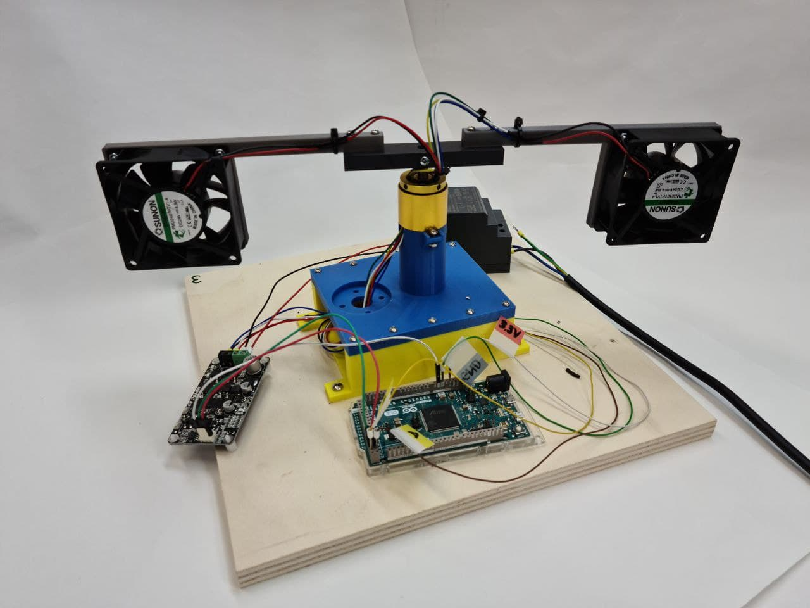
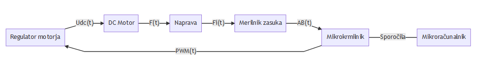
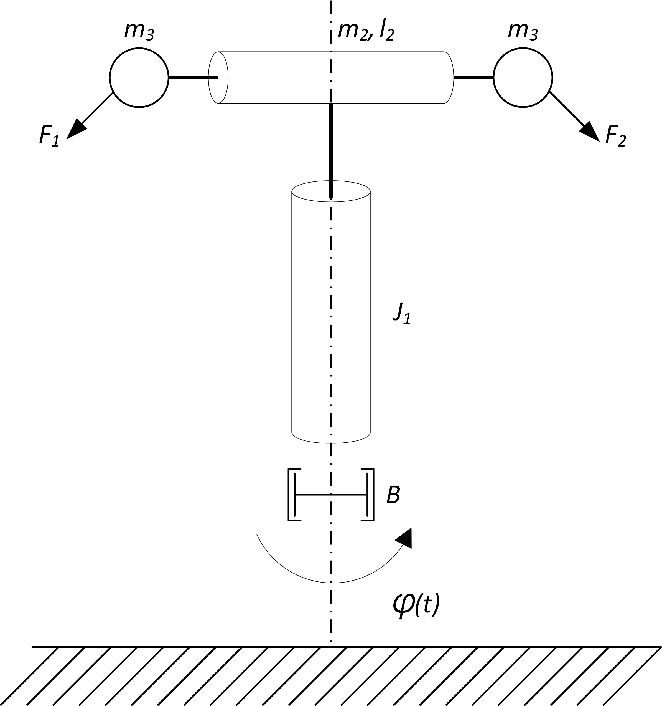
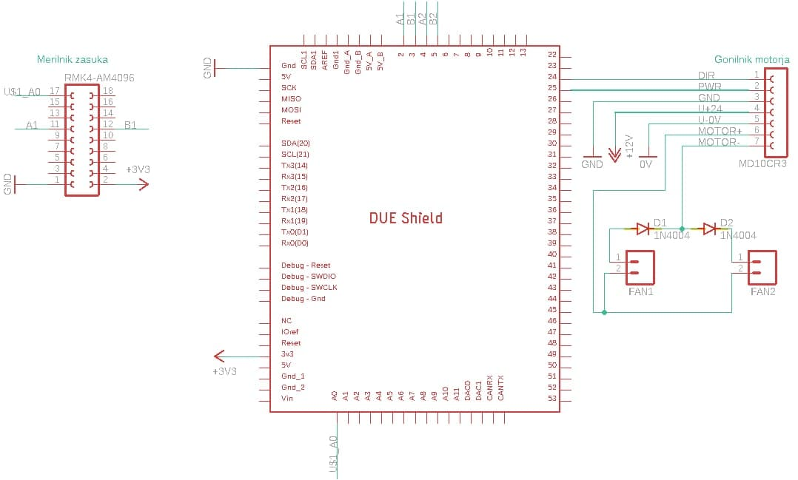

Diskretni krmilni sistemi (MA-RRP-1)
DKSM
Maketa AERO
Page content
Maketa AERO je laboratorijska naprava namenjena spoznavanju področja vodenja dinamičnih sistemov. Napravo sestavlja rotirajoči prečni nosilec na katerega sta pritrjena dva ventilatorska pogona, ki poganjata nosilec v horizontalni ravnini. Merilnik kota sledi gibanju rotacije nosilca.

Maketo sestavljajo naslednji gradniki:
- mehanska naprava
- merilnik zasuka
- ventilatorski pogon
- regulator motorja
- mikrokrmilnik (Arduino Due)
Gradniki so povezani kot prikazuje blokovna shema

Mehanska naprava
Naprava je rotirajoči mehanski dinamičen sistem. Shematično je prikazan na sliki:

Napravo sestavlja tram, ki rotira okoli vertikalne osi. Na obeh koncih rotirajočega trama je pritrjen po en ventilatorski pogon, ki je ponazorjen s točkasto maso m3 . Zasuk vertikalne osi označuje kot φ (t), poganja pa ga potisk ventilatorskih pogonov, ki ustvarjata sili F1 (t) in F2 (t).
Spremenljivke sistema:
| Oznaka | Opis | Enota |
|---|---|---|
| F1, F2 | Sila, ki povzroča rotacijo naprave | N |
| φ | Kot rotacije vertikalne osi | ° |
Parametri sistema:
| Oznaka | Opis | Vrednost | Enota |
|---|---|---|---|
| J1 | Vztrajnosti moment vertikalne osi |
0,29 | g · m² |
| m2 | Masa prečnega trama | 90 | g |
| l2 | Dolžina horizontalnega telesa | 32 | cm |
| m3 | Masa ventilatorskega pogona | 90 | g |
Merilnik zasuka
Vertikalna os je opremljena z merilnikom zasuka oz. kota. Nameščen je magnetni inkrementalni enkoder RLS AM4096 slovenskega podjetja RLS d.o.o.. Merilnik meri relativno gibanje osi ter posreduje informacijo v obliki digitalnega signala mikrokrmilniku. Praktičen primer uporabe takega merilnika je dostopen v gradivu.
Ventilatorski pogon
Obračanje naprave okoli osi dosežemo z dvema enakima ventilatorskima pogonoma, kjer vsak ventilator poganja napravo v eno smer in s tem spreminja kot \varphiφ. Podatkovni list ventilatorskega pogona.
Gonilnik ventilatorskega pogona
Za pogon enosmernega motorja skrbi motorski gonilnik MD10C R3 podjetja Cytron. Gonilnik je povezan na dva pogona na način, ki omogoča dvosmerno vrtenje naprave. S spreminjanjem polaritete izhoda gonilnika se ne obrača smer vrtenja pogonov, ampak se izmenjujeta delovanje enega in drugega pogona. Gonilnik upravljamo z dvema digitalnima signaloma power in direction. power signal predstavlja PWM (Pulse Width Modulation) moduliran signal direction pa polariteto napetostnega izhoda. Praktičen primer krmiljenja gonilnika je dostopen v gradivu.
Mikrokrmilnik
Uporabljen je mikrokrmilnik ARM, ki je vpet na razvojni plošči ArduinoDue.
Opozorilo: Arduino Due deluje na 3,3 V. To velja tudi za analogne vhode (branje z ukazom analogRead()). Privzeto se na analognih vhodih uporablja 10-bitna resolucija (AD pretvorba), Arduino Due pa podpira tudi 12-bitno resolucijo, ki se jo nastavi z ukazom analogReadResolution(bits). Privzeto Arduino Due generira PWM signale z 8-bitno resolucijo, z ukazom analogWriteResolution(bits) pa se lahko nastavi tudi 12-bitno resolucijo.
Električni del
Električna shema naprave prikazuje povezave Arduino mikrokrmilnika z 2 inkrementalnima enkoderjema in krmilnikom DC motorja.

Povezave digitalnih signalov z Arduinom so predstavljene v tabeli
| Naprave | Pin | Arduino Pin | povezava | vhod/izhod |
|---|---|---|---|---|
| RMK4 |
17 (Vout) | A0 | U1 | vhod |
| RMK4 |
11 (A) | 22 | A1 | vhod |
| RMK4 |
12 (B) | 23 | B1 | vhod |
| MD10C R3 | DIR | 2 | DIR | izhod |
| MD10C R3 | PWM | 3 | PWM | izhod |
{kind=link}